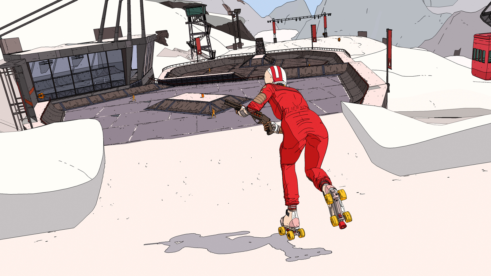

Hey there weary traveller.
I write shaders, do art sometimes.
You can contact me here.
Check out some of the games I've worked on below.
Website still work in progress.
Hey there weary traveller.
I write shaders, do art sometimes.
You can contact me here.
Check out some of the games I've worked on below.
Website still work in progress.
Wednesday, 10th of July
2:00pm, Room 2
I will be a speaker at Develop 2024!
You can see me talk about Everything I Learned Making Art For Illustrative Styles
Technical Artist
2022 - Nintendo Switch, Playstation 4+5, Xbox Series, PC
OlliOlli World is an exhilarating skating action platformer, set in the vibrant quirky and cozy world of Radlandia.
On the project my main achievement was writing the No Comply Renderer. Which is responsible for rendering the game, by harnessing Unity's Scriptable Render Pipeline. Creating it's distinctive cartoon art style.
The No Comply Renderer is the many shaders used on the characters, environment, and post processes. As well as the code that glues it all together.
One of the main stars of the show in OlliOlli World is the beautiful pastel colour pallet. The game has many many levels, and we wanted each level to be a continuation of the evolving colour story that's building through each of biome.
I created a Meta Gradient Texture system and workflow for the artists to use. Every environment asset is mapped to a shared texture, which is responsible for the colour that you see in the level.
This had the dual benefits of allowing the Lead Artist to direct and change the feel of the level as a whole, any time and completely non-destructively. As well as meaning an artist creating a level could easily take art from different levels and reuse them. The colours of this asset already matching the rest of the current environment, as soon as you drop it in the level.
I also supported the 3D artists with their art creation process, this style of rendering needing the art to be made in a non-standard way. Including quality of life improvements in their art programs, going from 3D software to engine, and in engine tools.
Technical Artist
Playstation 4+5, Xbox Series, PC
While working on OlliOlli World, Roll7 had another team prototyping Rollerdrome. I wrote the No Comply Renderer to be flexible and support the art styles of both OlliOlli World and Rollerdrome at the same time.
Rollerdrome is the Bafta winning, fast and blisteringly fun combat chess game on rollerskates. If Tony Hawk Pro Skater and Doom had a baby, it would probably look like Rollerdrome.
Rollerdrome targeting next gen meant there was extra graphics headroom. Which meant getting to write additional rendering features like a decal system. As well as writing the core shaders for the characters, environments, and post processes.
As I was sharing my time between the two projects and they had similar artistic needs many of the tools and workflows were designed to be project agnostic. With modularity and performance in mind, supporting low end devices like OlliOlli World targeting 60 fps on Nintendo Switch, up to Rollerdrome targeting 4k 120fps on Playstation 5.
The Meta Gradient Texture system for example, was in both projects. As was much of the workflow used by artists. This was good because despite having a non-standard art pipeline, artists could be shared between both projects when it was required, with little retraining.
I'm very fond of character lighting in Rollerdrome. The visuals are so stylised, and the gameplay fast paced, we decided to divorce the character lighting from the environment. The lighting and shadow drawn by the player are directed by special volumes placed by the environment artists. This keeps the player clear and readable no matter where they are, or how frantic the action.
Environment & Technical Artist
PC, PS4, Xbox One, Nintendo Switch
John Wick Hex is a tactics game where you conduct John Wick's lethal actions, set in an inky noir world.
I wrote the shaders which render the characters, environments, post process which gives the game it's comic book like feel.
I was also responsible for making the majority of the game's VFX and environment art. Including a procedural room generator, which allowed for rectangular rooms to be build on a hexagonal grid.
And the Fog of War system, which means anything not in Wick's active line of sight recedes into the murky darkness.
Environment & Technical Artist
Playstation VR, Oculus, PC
Arca's path is a serine and colourful VR platform game, which not everything is as peaceful as it seams.
I was brought on to Arca's Path to optimise the game and make sure it looks it's best from our low end platform of Gear VR, up to PSVR and high end PC VR rigs.
I stayed on to do additional support for the environment art team. Creating shaders, VFX, and the novel Level Of Detail system used to support the limited draw distance of the hardware, while fitting in the artistic tone of the world.
Environment & Technical Artist
The Mannequin was a first person horror game set against the backdrop of The Windrush Generation and social inequality in London. But was fated to never be released.
I was the environment artist responsible for making the London townhouse the game is set in. As well as lighting, and helping develop the painterly style.